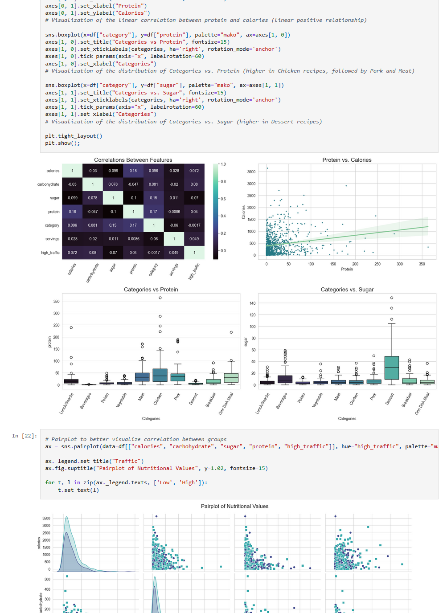
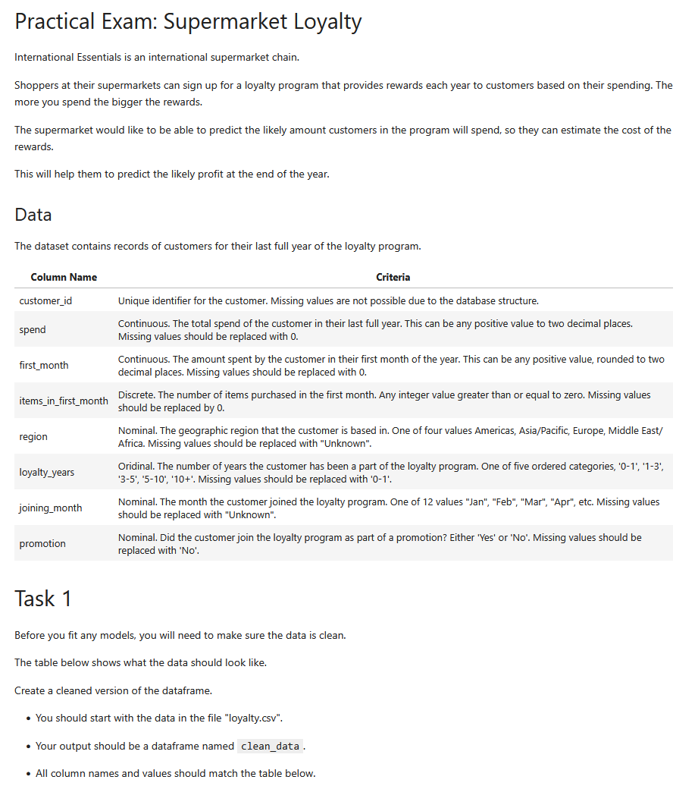
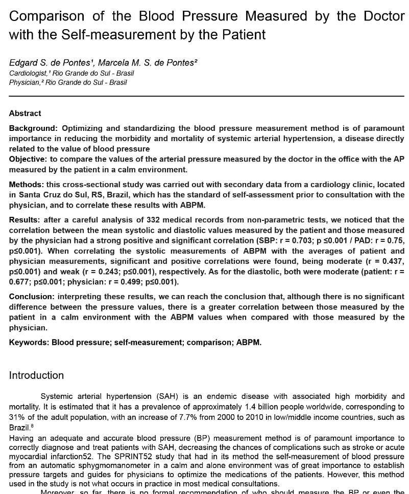
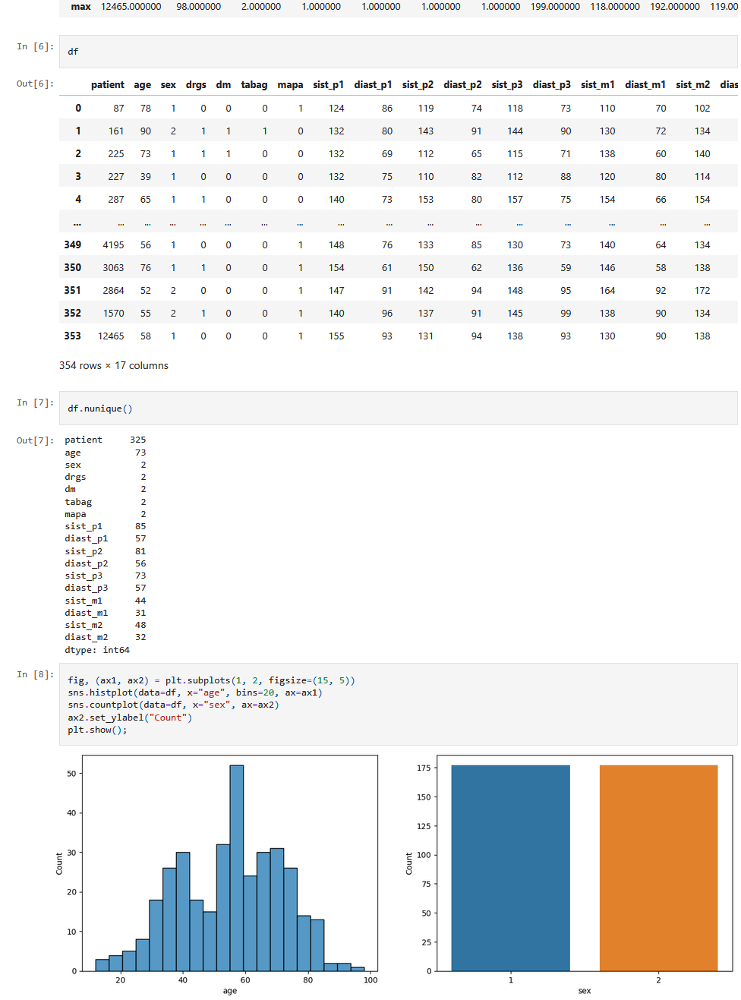

🍽️ Popular Recipe Prediction

📊 Binary Classification
🐍 Python & scikit-learn
🔬 Data Cleaning & Feature Engineering
📈 Model Evaluation & Precision Optimization
🥗 Recipe Dataset Analysis
🚦 Traffic & Subscription Prediction
DataCamp Data Science exam predicting popular recipes to optimize
website traffic and subscription growth, using logistic regression
and decision tree classifiers with careful feature engineering and
evaluation.
View full notebook
🛒 Supermarket Loyalty Program

📊 Predictive Modeling
🐍 Python
💳 Loyalty Program Analytics
💰 Customer Spend Forecasting
📈 Retail Data Science
🛍️ Supermarket Dataset
An Aassociate Data Scientist exam from DataCamp notebook predicting
customer spending in a supermarket loyalty program to estimate
rewards costs and forecast profitability, using predictive modeling
and data science techniques.
View full notebook
🩻 Eurorad Case: Complicated Double Bronchogenic Cysts
🫁 Thoracic Imaging
👶 Pediatric Case
🩻 Bronchogenic Cysts
🏥 Clinical & Surgical Management
📚 Radiology Case Study
A rare pediatric case of double bronchogenic cysts presenting with
respiratory distress and recurrent infections, diagnosed via chest
X-ray and CT, followed by successful surgical resection. Emphasizes
early diagnosis and clinical management.
View Full Case on Eurorad
📑 Research Paper: Blood Pressure

📊 Statistical Analysis
🩺 Hypertension Research
📈 Correlation Study
🏥 Medical Data
💉 Blood Pressure Monitoring
A cross-sectional study comparing office blood pressure measurements
by physicians with patient self-measurements in a calm environment,
analyzing correlations with ambulatory blood pressure monitoring to
improve hypertension management.
Read the Paper
📊 Blood Pressure Analysis

📈 Data Analysis
🐍 Python & Pandas
🩺 Blood Pressure Dataset
📊 Jupyter Notebook
A short exploratory data analysis of blood pressure measurements
based on the research comparing doctor and patient self-measurement
values.
View Full Notebook
🧬 New Analyses in Development
Stay tuned for upcoming healthcare data explorations.
🩹 Research in Progress...